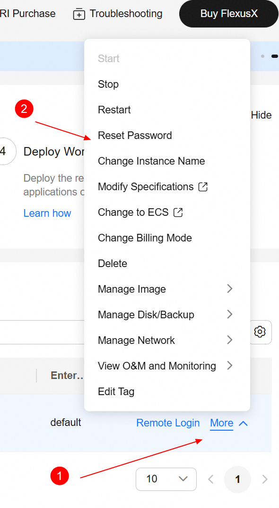
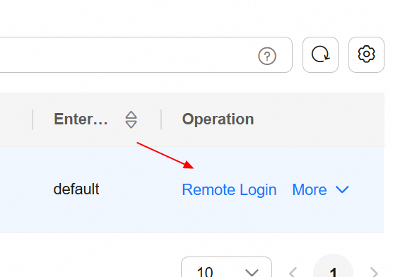
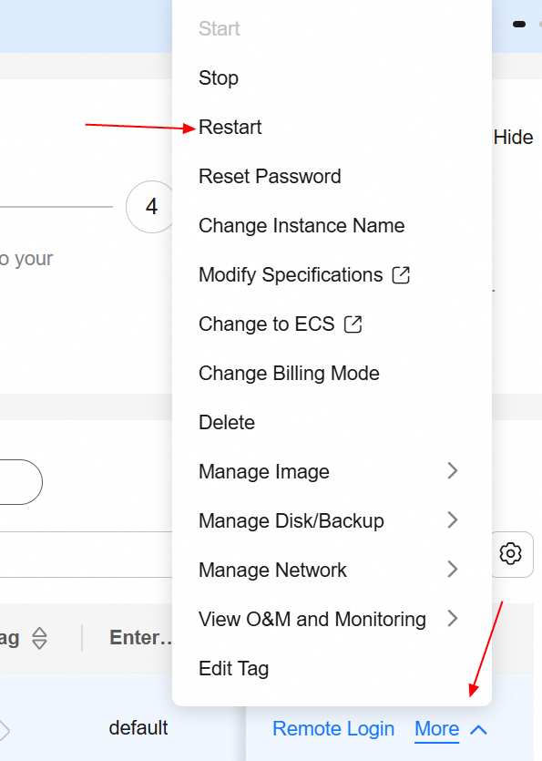
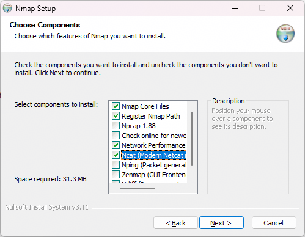
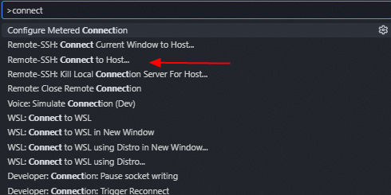

Huawei Technologies CO., LTD
v6.11.0 — September 21, 2026 14:35
Provision a Flexus X Instance on Huawei Cloud
General Objective: Provision a Flexus X instance on Huawei Cloud that will host a complete coding stack environment: the oh-my-coding-maas-gateway (a LiteLLM-based proxy with load balancing, virtual keys, and Grafana observability), governance tooling, and multiple coding agents --- with OpenCode as the primary one. By the end of this chapter you will have a running Flexus X instance with a public IP accessible over SSH.
Prerequisites:
-
Active Huawei Cloud account with IAM credentials.
-
Permission to create security groups, Flexus X instances, and EIPs.
-
A key pair created in the Console, or permission to create one.
-
A web browser (Chrome, Firefox, or Edge).
|
Note
|
This guide assumes the sa-brazil-1 region. Adjust the region if your
account is registered elsewhere.
|
Create the security group (sg-xgate)
Objective: Create a security group that allows SSH access on port 4444 from specific Huawei internal IPs only.
|
Note
|
We use port 4444 instead of the standard SSH port 22 because
the Huawei corporate proxy blocks outbound connections on port 22. Port
4444 is allowed through the proxy and works reliably for SSH.
|
Step by step:
-
In the Console, go to menu:VPC[Security Groups] and click Create Security Group.
-
Name it
sg-xgateand add the following inbound rules:Rule 1: Protocol: TCP Port: 4444 Source: 119.8.89.193/32 Description: SSH for Huawei internal user 1 Rule 2: Protocol: TCP Port: 4444 Source: 119.8.89.3/32 Description: SSH for Huawei internal user 2 Rule 3: Protocol: TCP Port: 4444 Source: 119.8.193.3/32 Description: SSH for Huawei internal user 3
-
Click OK to create the security group.
|
Tip
|
Each /32 rule restricts access to exactly one IP address. Only the
three listed Huawei internal IPs can reach the instance on port 4444 --- no other
inbound traffic is allowed.
|
Create the Flexus X instance
Objective:- Launch a single Flexus X instance using the Console wizard, using the security group created above.
Step by step:
-
Log in to the Huawei Cloud Console and select the
sa-brazil-1region in the top-right corner. -
Open the service catalog and select Flexus X (under Compute).
-
Click Create Flexus X to open the creation wizard.
-
Under Billing Mode, select Pay-per-use.
|
Tip
|
Pay-per-use bills by the hour with no long-term commitment. You only pay for the time the instance is running. This is ideal for development and testing --- stop the instance when not in use to reduce costs. |
-
Set the compute resources using the slider: drag to 4 vCPU and 16 GB RAM.
|
Note
|
Flexus X uses a slider for vCPU and memory instead of fixed flavor names.
The resulting flavor ID is x1.4u.16g, but you select it by
dragging the vCPU and RAM controls --- there is no flavor dropdown.
|
-
Fill in the remaining basic configuration:
AZ: Any (choose the availability zone you prefer) Image: Ubuntu 24.04 Server 64bit Disk: 100 GB General Purpose SSD VPC: vpc-default Subnet: subnet-default Security Group: sg-xgate (port 4444, Huawei internal IPs only)
|
Warning
|
The EIP is auto-assigned and configured to be released when the instance is deleted. If you need a fixed IP that persists across stop/start cycles, allocate a dedicated EIP and bind it manually after creation. |
-
Under EIP settings, configure the public IP:
EIP: Auto-assign Billing: Pay by traffic Bandwidth: 1000 Mbit/s Release: Yes — release EIP when instance is deleted
-
Under Cloud Eye, enable monitoring (recommended).
|
Note
|
Cloud Eye is a monitoring service that provides functions such as real-time monitoring, alarm reporting, resource grouping, and website monitoring. Enabling it gives you visibility into instance health, CPU, memory, and network metrics out of the box. |
-
Set the instance name to
flexusx-dev(or any name you prefer). -
Under Login Configuration, select Key pair as the authentication method. If you do not yet have a key pair, click Create Key Pair to generate one inside Huawei Cloud and download the
.pemfile.
|
Note
|
The key pair is the primary access method. Later, you can set a root password on the instance (via the Console or after first login with the key) to have a second way to access the instance. |
-
Click Create Now and wait for the status to change to Running.
Verify the instance
On the instance details page, copy the EIP field. This is the address you will use to connect in the next chapters.
| Step | What to check | Expected result |
|---|---|---|
Security group |
|
3 inbound rules |
Billing mode |
Pay-per-use selected |
Hourly billing |
Compute |
4 vCPU, 16 GB RAM via slider |
Flavor |
Image |
Ubuntu 24.04 Server 64bit |
Selected |
EIP |
Auto-assigned |
Public IP available |
Cloud Eye |
Monitoring enabled |
Metrics visible |
Instance name |
|
Set |
Key pair |
Created and downloaded |
|
Instance |
Status is Running |
EIP copied |
Configure Flexus X for Remote Access
General Objective: Prepare the Flexus X instance for remote access by setting a root password via the Console and changing the SSH port from 22 to 4444. This is required because the Huawei corporate proxy blocks outbound connections on port 22.
Prerequisites:
-
Chapter 1 completed — Flexus X instance running with a public IP.
-
Access to the Huawei Cloud Console.
Set the root password
Objective: Use the Console to reset the root password of the Flexus X instance.
Step by step:
-
In the Console, navigate to Flexus X and click on the instance
flexusx-dev. -
In the instance details page, click menu:More[Reset Password].

Figure 1. Figure 1: Reset Password option in the Flexus X details page. -
Enter a strong root password and confirm. Click OK.
-
The instance will restart automatically. Wait for the status to return to Running.
|
Warning
|
Choose a strong password (12+ characters, mixed case, digits, symbols). This password enables remote login directly from the Console and serves as a second access method alongside the SSH key pair. |
Change the SSH port to 4444
Objective: Log in via the Console remote login, edit sshd\_config,
and change the SSH port from 22 to 4444.
Step by step:
-
In the instance details page, click Remote Login. A browser-based terminal opens.

Figure 2. Figure 2: Remote Login button in the Flexus X details page. -
Log in as
rootusing the password set in the previous subsection. -
Open the SSH daemon configuration file:
sudo vim /etc/ssh/sshd_config -
Find the line
Port 22(or#Port 22) and change it to:Port 4444
-
Save and exit vim (
:wq). -
Reboot the instance from the Console to apply the change. The SSH daemon will start automatically on port 4444 after reboot.

Figure 3. Figure 3: Restart the Flexus X instance from the Console.+ WARNING: The reboot is mandatory --- not optional. Until the instance is rebooted, SSH continues listening on port 22 and the proxy
CONNECTto port 4444 will fail withNcat: Error reading proxy response Status-Line. If you skip this step, all subsequent SSH connections through the proxy will fail.
|
Note
|
After this change, SSH connections must use Port 4444 explicitly.
The security group sg-xgate (created in Chapter 1) already allows
inbound TCP 4444 from the authorized Huawei internal IPs.
|
Verify the configuration
Use the table below to confirm all steps were completed successfully before proceeding to the next chapter:
| Step | What to check | Expected result |
|---|---|---|
Security group |
|
3 inbound rules |
Flexus X running |
Instance |
Running |
Root password |
Remote Login works with password |
Shell prompt |
SSH port |
|
Config saved |
SSH restart |
Instance rebooted from Console |
Service active |
Install ncat and SSH Connection Topology
General Objective: Install ncat (from Nmap) on your local Windows
machine and understand the SSH connection topology through the Huawei corporate
proxy (xgate). ncat serves as the SSH ProxyCommand, tunneling SSH
through the HTTP proxy via the CONNECT method.
Prerequisites:
-
Chapter 2 completed — Flexus X configured with root password and SSH on port 4444.
-
The private key file (
.pem) downloaded from Huawei Cloud.
|
Note
|
Premises: |
-
The proxy is xgate (Huawei corporate proxy) at
proxy.huawei.com:8080. -
SSH runs on port
4444(configured in Chapter 2). -
Login as
rootusing the key pair from Chapter 1. -
ncat(from Nmap) is used as theProxyCommandto tunnel SSH through the HTTP proxy via theCONNECTmethod. -
Proxy authentication is transparent --- it is handled by the corporate VPN, not by credentials in the SSH config.
How the connection works
When you specify a ProxyCommand in the SSH config, SSH launches
ncat as a child process. ncat performs the HTTP CONNECT
handshake with the proxy:
ncat -> proxy: CONNECT <EIP>:4444 HTTP/1.1
Host: <EIP>:4444
proxy -> ncat: HTTP/1.1 200 Connection Established
[Both sides now send raw TCP bytes -- SSH negotiation begins over the tunnel]
After the 200 Connection Established response, the proxy becomes a
blind TCP relay --- it neither inspects nor modifies the SSH traffic. SSH key
exchange, encryption, and authentication all happen inside this tunnel as if it
were a direct TCP connection.
|
Note
|
The corporate proxy blocks CONNECT to port 22 (standard SSH) but
allows it to port 4444. Enterprise HTTP proxies implement a CONNECT
port allowlist: port 443 (HTTPS) is always allowed, port 22 is usually blocked,
and port 4444 is often allowed because it is commonly used for HTTPS-alt. This
is why we configured SSH on port 4444 in Chapter 2.
|
Why ncat
ncat is the chosen proxy tunnel tool for several reasons:
-
Full HTTP CONNECT support --- ncat implements the
CONNECTmethod natively via--proxy-type http. -
Actively maintained --- part of the Nmap project, with regular releases and bug fixes.
-
IPv4 forcing --- the
-4flag prevents failed IPv6 attempts through the proxy. -
Connect timeout --- the
-wflag prevents indefinite hangs if the proxy is unreachable. -
Proxy auth support ---
--proxy-authand theNCAT\_PROXY\_AUTHenvironment variable, if explicit credentials are ever needed.
|
Note
|
connect.exe (from Git for Windows) is a lighter alternative that
ships with Git, but it lacks the -4 (force IPv4) and -w
(connect timeout) flags, which are important for reliable proxied connections.
ncat provides better control over the tunnel behavior.
|
Install ncat on Windows
Objective: Install Nmap, which provides ncat.exe --- the proxy
tunnel tool used by SSH ProxyCommand.
Step by step:
-
Download the Nmap installer from nmap.org/download.html. Use the Latest stable release self-installer (
nmap-7.991-setup.exe, tested and verified). -
Run the installer (right-click Run as Administrator).
-
During installation, uncheck Npcap --- it is a kernel driver for packet capture and is not needed for proxy tunneling. Also uncheck Zenmap, Nping, and Ndiff for a minimal install.

Figure 4. Figure 4: Nmap installer component selection --- uncheck Npcap, Zenmap, Nping, and Ndiff.+ TIP: Skipping Npcap avoids a kernel driver install and potential reboot.
ncatin proxy mode uses standard Winsock2 TCP sockets and does not need Npcap at all. -
Choose the default install path:
C:\Program Files (x86)\Nmap. -
After installation, verify that
ncat.exeis available:"C:\Program Files (x86)\Nmap\ncat.exe" --version -
If the command shows the version string, the installation is correct.
|
Warning
|
Nmap is commonly flagged by antivirus software due to port-scanning heuristics.
Windows Defender may quarantine ncat.exe on download or block
execution. Add an exclusion for the Nmap folder and the ncat.exe
process in menu:Windows Security[Virus & threat protection, Exclusions].
If ncat.exe was already quarantined,
restore it from Protection history before adding the exclusion.
|
| Step | What to check | Expected result |
|---|---|---|
Nmap download |
|
Installer ready |
Components |
Npcap, Zenmap, Nping, Ndiff unchecked |
Minimal install |
Install path |
|
Default path |
ncat.exe |
|
Installed correctly |
Antivirus |
Exclusion added for Nmap folder |
|
Install VS Code and Connect via Remote-SSH
General Objective: Install VS Code from scratch on your local Windows machine, install the Remote-SSH extension, configure the SSH config file using VS Code as the editor, and connect to the Flexus X instance.
Prerequisites:
-
Chapter 3 completed --- ncat installed and proxy tunnel understood.
-
The private key file (
.pem) downloaded from Huawei Cloud.
Install VS Code
Step by step:
-
Download VS Code from code.visualstudio.com/download. Choose the Windows installer (User Installer, 64-bit).
-
Run the installer with the default settings.
-
After installation, verify VS Code is available:
code --version
Install the Remote-SSH extension
Step by step:
-
Open VS Code on your local Windows machine.
-
Install the Remote - SSH extension (publisher: Microsoft):
code --install-extension ms-vscode-remote.remote-ssh
Configure the SSH config file
Objective: Create an SSH config entry that tunnels through the Huawei proxy
using ncat from Nmap. Use VS Code as the editor.
Step by step:
-
Open or create the SSH config file using VS Code:
code %USERPROFILE%\.ssh\config -
Add the following configuration. Replace these placeholders with your values:
-
<host-name>--- a name of your choice (e.g.,flexusx-dev) -
<EIP>--- the Flexus X public IP copied from Chapter 1 -
<user>--- your Windows username (e.g.,w00946241) -
<key-file>--- the name of your.pemkey file downloaded from Huawei Cloud (e.g.,KeyPair-opencode)
Host <host-name> HostName <EIP> User root Port 4444 IdentityFile "C:\Users\<user>\.ssh\<key-file>.pem" ProxyCommand "C:\Program Files (x86)\Nmap\ncat.exe" -4 -w 10 --proxy proxy.huawei.com:8080 --proxy-type http %h %p ServerAliveInterval 15 ServerAliveCountMax 4 ConnectTimeout 10 TCPKeepAlive yes StrictHostKeyChecking accept-newNoteThe IdentityFilepath has two placeholders:<user>is your Windows username (the folder underC:\Users\), and<key-file>is the name of the.pemfile downloaded from Huawei Cloud in Chapter 1. For example:C:\Users\w00946241\.ssh\KeyPair-opencode.pem. -
What each ncat flag does
| Flag | Purpose |
|---|---|
|
Force IPv4 (avoids failed IPv6 attempts through the proxy) |
|
10-second connect timeout (prevents indefinite hang) |
|
Proxy address and port ( |
|
Use HTTP CONNECT method |
|
Substituted by SSH with the HostName (the EIP) |
|
Substituted by SSH with the Port (4444) |
|
Tip
|
The ServerAliveInterval 15 and ServerAliveCountMax 4
settings send a keepalive every 15 seconds and disconnect after 4 missed
keepalives (60 seconds dead detection). This is critical for proxied
connections, which may drop idle sessions after 5—30 minutes.
|
Connect to the Flexus X via VS Code
Step by step:
-
Press
F1to open the Command Palette, type Remote-SSH: Connect to Host…, and pressEnter.
Figure 5. Figure 5: VS Code Command Palette --- select Remote-SSH: Connect to Host… -
Select your host name (e.g.,
flexusx-dev) from the list of configured hosts. -
If prompted to select the platform type, choose Linux. This tells VS Code which server binary to download and avoids auto-detection delays.
|
Note
|
VS Code only asks for the platform type the first time you connect to a
new host. The selection is saved in your local settings
(remote.SSH.remotePlatform) and reused on subsequent connections.
|
-
VS Code opens a new window and begins connecting. On the first connection, it downloads and installs the VS Code Server on the remote instance --- this takes about 1—2 minutes. Subsequent connections are faster.
-
Once connected, click Open Folder and select
/home(or your working directory). -
Verify the connection by opening a terminal in VS Code (
Ctrl+`) and running:uname -a df -h
|
Note
|
The first connection installs the VS Code Server on the remote instance, which
requires outbound internet access on port 443 (HTTPS). The Flexus X instance
has an EIP, so it typically has outbound internet access. If the connection
hangs during server installation, verify with
curl -sI pass:https://update.code.visualstudio.com from the instance.
|
Troubleshooting
If the connection fails, check these common issues:
-
Ncat: Error reading proxy response --- SSH was not restarted after the port change (Chapter 2). Fix: reboot the instance from the Console.
-
Ncat: Error reading proxy response --- proxy
CONNECTpermission missing for this IP. Fix: request IT permission for the instance EIP on port 4444. -
Connection timed out --- proxy unreachable or
CONNECTblocked. Fix: verify proxy address; test ncat with the-vflag. -
UNPROTECTED PRIVATE KEY FILE --- key permissions too open. Fix: run
icaclsto restrict the key file to your user only. -
VS Code hangs on first connect --- instance cannot reach internet on port 443. Fix: verify
curl -sI pass:https://update.code.visualstudio.comfrom the instance. -
$PLATFORM is undefined --- SSH connection failed before server install. Fix: check the Remote-SSH output log; fix the underlying SSH error first.
|
Note
|
To debug the proxy connection, run ncat directly with verbose output: |
+
"C:\Program Files (x86)\Nmap\ncat.exe" -v --proxy proxy.huawei.com:8080 --proxy-type http <EIP> 4444
This shows the CONNECT request and the proxy’s raw response (or
connection close). For SSH-level debugging, run
ssh -vvv <host-name> "echo ok".
| Step | What to check | Expected result |
|---|---|---|
VS Code |
|
Installed |
Remote-SSH |
Extension installed |
Active |
SSH config |
Host entry with ncat ProxyCommand |
Config saved |
Connection |
Remote-SSH connects to host |
Flexus X accessible |
Terminal |
|
Output verified |
Install the MaaS Coding Gateway
General Objective: Install the oh-my-coding-maas-gateway on the Flexus X instance. This is a self-hosted LiteLLM proxy that routes Huawei ModelArts MaaS models to coding tools with load balancing, virtual keys, dual-format API endpoints, and Prometheus + Grafana observability.
Prerequisites:
-
Chapter 4 completed — VS Code connected to the Flexus X via Remote-SSH.
-
Docker and Docker Compose available (the installer handles this).
-
A Huawei ModelArts MaaS API key.
Overview
The oh-my-coding-maas-gateway is a self-hosted proxy gateway that sits between your coding tools and Huawei ModelArts MaaS (Model-as-a-Service) models. It provides:
-
Load balancing --- distributes requests across multiple MaaS API keys (N keys → N deployments per model per format).
-
Virtual key management --- each coding tool gets its own virtual key with unlimited budget, isolated from the real MaaS keys.
-
Dual-format API endpoints --- OpenAI Chat Completions (
/v1/chat/completions) and Anthropic Messages (/v1/messages), so tools using different API formats can all reach the same MaaS models. -
Budget tracking --- per-key spend tracking via LiteLLM PostgreSQL, with cost-per-token configured for all models.
-
Full observability --- Prometheus metrics + Grafana 39-panel dashboard (latency, errors, throughput, tokens, cache, cost).
|
Note
|
The gateway repository is at
wallacelw/oh-my-coding-maas-gateway.
It supports 4 models: glm-5.2 (1M context),
glm-5.1, deepseek-v4-pro, and
deepseek-v4-flash (384K max output). This guide was tested with
v1.10.9; the installation process is the same for newer versions.
|
Architecture
The gateway deploys 4 Docker containers via Docker Compose:
Tools LiteLLM (:4000) Huawei MaaS ───── ─────────────── ──────────── opencode --> /v1/chat/completions --> openai/ --> MaaS OpenAI endpoint Codex CLI --> /v1/responses --> openai/ --> MaaS OpenAI endpoint Claude Code --> /v1/messages/ --> anthropic/ --> MaaS Anthropic endpoint Pi agent --> /v1/chat/completions --> openai/ --> MaaS OpenAI endpoint LiteLLM: load-balances across N MaaS keys . PostgreSQL (:5432) Observability: LiteLLM --/metrics--> Prometheus (:9090) --> Grafana (:3000)
| Service | Port | Purpose |
|---|---|---|
LiteLLM Proxy |
4000 |
API gateway (OpenAI + Anthropic format) |
PostgreSQL |
5432 |
LiteLLM database (keys, spend, config) |
Prometheus |
9090 |
Metrics storage and querying |
Grafana |
3000 |
Dashboard visualization (39 panels) |
|
Note
|
All ports bind to 127.0.0.1 (localhost only) by default. To access
Grafana and the LiteLLM Admin UI from your local machine, use SSH port
forwarding in VS Code or add port forwards in the Remote-SSH connection.
|
Each model has two deployments --- one OpenAI, one Anthropic --- so all tools
can use the same MaaS models regardless of their API format. The
claude- prefix (e.g., claude-glm-5.2) prevents routing
conflicts in LiteLLM.
Run the bootstrap installer
Objective: Install the gateway using the one-command bootstrap script.
Step by step:
-
In the VS Code remote terminal, run the bootstrap script:
curl -fsSL https://raw.githubusercontent.com/wallacelw/oh-my-coding-maas-gateway/main/scripts/bootstrap.sh | bash -
The installer will:
-
Prompt for your Huawei MaaS API key.
-
Show an interactive menu to select which coding tools to install (opencode, Codex CLI, Claude Code, Pi agent).
-
Auto-install prerequisites (Docker, Node.js, etc.).
-
Deploy the proxy + observability stack (LiteLLM, PostgreSQL, Prometheus, Grafana).
-
Configure each tool with its own virtual key.
-
Run 120 validation checks and offer to install the companion skill.
WarningEstimated time: ~5 min for a fresh install, ~2 min for an upgrade. If you are behind a proxy, ensure http\_proxyandhttps\_proxyenvironment variables are set before running the script. -
|
Tip
|
For non-interactive installs (CI/automation), pass the API key directly. The
-y flag suppresses all prompts (prerequisites, tool selection,
skill install):
|
+
curl -fsSL https://raw.githubusercontent.com/wallacelw/oh-my-coding-maas-gateway/main/scripts/bootstrap.sh | bash -s -- -y --api-key=sk-xxxx
Verify the installation
Step by step:
-
Check that the proxy is running:
curl http://localhost:4000/health -
Open the Grafana dashboard at
http://localhost:3000to monitor usage and metrics (39 panels across 7 sections). -
Open the LiteLLM Admin UI at
http://localhost:4000/uito manage virtual keys and model routing. -
Launch your coding tool:
opencode # or: codex or: claude --bare or: pi
|
Tip
|
To upgrade the gateway later, re-run the same bootstrap command. It detects existing installs, compares versions, and pulls updates --- all secrets and data are preserved. |
| Step | What to check | Expected result |
|---|---|---|
Bootstrap |
Installer completed |
All services deployed |
Proxy health |
|
Healthy |
Grafana |
|
Dashboard accessible |
LiteLLM UI |
|
Admin UI accessible |
Coding tool |
Launched and connected |
Gateway routing |
Install the Huawei Document Templates Project
General Objective: Clone the Huawei document templates repository on the Flexus X instance, run the setup script, and verify that the LaTeX toolchain and the coding agent skill are ready for use. The script assumes a fresh Ubuntu install --- it installs all dependencies from scratch and configures VS Code at the user level.
Prerequisites:
-
Chapter 5 completed — MaaS gateway installed and running.
-
Git installed (
sudo apt install git). -
The repository URL for the Huawei document templates project.
-
A fresh Ubuntu 24.04 instance (no prior LaTeX installation required).
|
Note
|
The install.sh script is idempotent --- it is safe to run multiple
times. It merges VS Code settings rather than overwriting them, and
apt-get install skips packages that are already present.
|
Clone and set up the project
Step by step:
-
Run the one-liner install (clones the repo to
/home/huawei-doc-templatesand installs everything):cd /home curl -fsSL https://raw.githubusercontent.com/wallacelw/huawei-doc-templates/main/scripts/install.sh | bashNoteThe script installs XeLaTeX, latexmk, fonts (HarmonyOS Sans + Cascadia Code), the opencode skills, and configures VS Code LaTeX Workshop. When run interactively ( ./scripts/install.sh), it prompts for optional components (skills and VS Code --- both default to yes). When run via one-liner, all components are installed automatically. It is idempotent --- safe to re-run.NoteIf an existing installation is detected, the one-liner prompts to update: Update v3.3.6 → v3.3.7? [Y/n]. It pulls the latest version and re-runs the installer. No need togit pullmanually. -
Verify the LaTeX toolchain:
xelatex --version latexmk --version
Compile the sample guides
The project includes a self-documenting Makefile. To compile all samples (guide + technical + testbook + poc, Portuguese + English):
Step by step:
-
From the repository root, run:
make samples -
Verify the PDFs were generated:
ls -l documents/guide-pt/main.pdf ls -l documents/guide-en/main.pdf ls -l documents/technical-pt/main.pdf ls -l documents/technical-en/main.pdf ls -l documents/testbook-pt/main.pdf ls -l documents/testbook-en/main.pdf ls -l documents/poc-pt/main.pdf ls -l documents/poc-en/main.pdf
|
Tip
|
To compile a single project, use make project DIR=documents/guide-pt
or run latexmk main.tex from the project’s src/
directory. Run make with no arguments to see all available targets.
|
Create your first guide with the skill
Step by step:
-
In the VS Code remote terminal, launch your coding agent:
cd /home/huawei-doc-templates opencode # or: codex, claude --bare, pi -
Run the guide skill:
/skill huawei-template-guide
-
The skill will ask for:
-
Title — e.g. “Provisioning an OBS Bucket”
-
Language — Portuguese or English
-
Project name — used as the folder name
-
Location — where to create the project folder
-
-
The skill generates the
.adocfile, creates a.latexmkrcwith the correctTEXINPUTS, compiles the document, and reports the page count.[Ready]
|
Note
|
The skill is auto-discovered via opencode.json which registers
templates/ as a skill discovery path. No manual skill installation
is needed when working inside the repo.
|
Write content using template commands
The template provides commands for common guide elements:
Headings (automatic numbering, H1 starts on a new page):
\section{Chapter Title} % H1: giant number + title + rule
\subsection{Section Title} % H2
\subsubsection{Subsection Title} % H3
Objectives block (closes with a horizontal rule):
\begin{objectives}
\generalobjective{...}
\prerequisites
\begin{itemize}
\item ...
\end{itemize}
\end{objectives}
Step-by-step and objectives (used inside subsections):
\objective{...}
\stepbystep
\begin{enumerate}
\item ...
\end{enumerate}
Callout boxes (environment syntax):
-
warning--- amber warning box -
tip--- green tip box -
infobox--- blue info box
Code blocks and inline commands:
-
\ begin{code} --- code block (verbatim, no escaping needed inside)
-
\ begin{code}[bash] --- same, with a language hint
-
\ inlinecode\{…\} --- inline monospace code
Images, links, and other inline commands:
\image{assets/screenshot.png} % centered image
\imagecap{assets/screenshot.png}{caption} % image with numbered caption
\note{Italic observation.} % note paragraph
\weblink{https://...}{link text} % blue clickable link
\menu{VPC, Security Groups} % menu path: VPC -> Security Groups
\badge{New} % inline red label
|
Note
|
The project also includes a technical template for technical
reports. Use /skill huawei-template-technical to create technical
reports with a 5-section structure (problem, root cause analysis, root cause,
trigger condition, workaround). See templates/technical/SKILL.md
for the full command reference.
|
| Step | What to check | Expected result |
|---|---|---|
Repository |
Cloned to |
Files present |
install.sh |
Completed without errors |
Dependencies installed |
XeLaTeX |
|
Toolchain ready |
latexmk |
|
Build system ready |
Sample PDFs |
|
Guide + technical, PT + EN |
Skill |
|
Available |
Operations and Maintenance
General Objective: Update, uninstall, or clean up the software and cloud resources created in this guide. All operations in this chapter are optional.
Updating the MaaS Gateway
To update the oh-my-coding-maas-gateway to a newer version:
Step by step:
-
Re-run the bootstrap script in the VS Code remote terminal:
curl -fsSL https://raw.githubusercontent.com/wallacelw/oh-my-coding-maas-gateway/main/scripts/bootstrap.sh | bash -
The installer detects the existing installation, pulls updates, and preserves all secrets, virtual keys, and data.
-
To update only the coding tools (without touching the proxy stack):
cd /home/oh-my-coding-maas-gateway ./scripts/update.sh
Updating the Document Templates
To update the Huawei document templates project:
Step by step:
-
Re-run the one-liner --- it detects the existing installation and prompts to update:
curl -fsSL https://raw.githubusercontent.com/wallacelw/huawei-doc-templates/main/scripts/install.sh | bash -
The script pulls the latest version, shows the version change (
v3.3.6 → v3.3.7), and re-runs the installer. New templates, commands, or modules are installed automatically.
Uninstalling the MaaS Gateway
To remove the oh-my-coding-maas-gateway:
Step by step:
-
Run the uninstall script:
cd /home/oh-my-coding-maas-gateway ./scripts/uninstall.sh --all --yes -
This stops and removes Docker containers, volumes, and images, removes coding tool configs (opencode, Codex, Claude, Pi), and deletes the repository.
-
To remove only specific components:
./scripts/uninstall.sh --tool=opencode # remove one tool ./scripts/uninstall.sh --docker # remove Docker stack only
Uninstalling the Document Templates
To remove the Huawei document templates installation:
Step by step:
-
Run the uninstall script (interactive menu with 5 options):
cd /home/huawei-doc-templates ./scripts/uninstall.sh -
Or use the one-liner:
curl -fsSL https://raw.githubusercontent.com/wallacelw/huawei-doc-templates/main/scripts/uninstall.sh | bash -
The interactive menu offers:
-
Option 1: All installed components (skills, modules, font, VS Code)
-
Option 2: Everything + apt packages (WARNING: breaks other TeX)
-
Option 3: Delete repository directory (all files, guides, documents)
-
Option 4: Remove 100% --- everything + apt + repo (nuclear option)
-
Option 5: Choose specific components individually
-
-
To preview what would be removed before running:
./scripts/uninstall.sh --all --dry-run -
To also remove apt packages (texlive, latexmk, fonts, pandoc):
./scripts/uninstall.sh --all --packages --yesWarningRemoving apt packages will break any other LaTeX documents on the instance. Only use --packagesif you are decommissioning the instance.
Deleting cloud resources (optional)
If you no longer need the Flexus X instance, delete it to stop incurring charges:
Step by step:
-
In the Console, navigate to Flexus X.
-
Select the instance
flexusx-dev, click More and choose Delete. -
Confirm deletion. The EIP is released automatically (configured in Chapter 1 to release on instance deletion).
-
Navigate to menu:VPC[Security Groups], select
sg-xgate, and delete it. -
Remove the SSH config entry for
flexusx-devfrom your Windows SSH config file (C:\Users\<user>\.ssh\config).
|
Warning
|
If you used Terraform to provision the infrastructure, run
terraform destroy instead to remove all resources declared in the
configuration.
|
| Step | What to check | Expected result |
|---|---|---|
Gateway update |
Re-run bootstrap |
New version running |
Templates update |
|
New templates available |
Gateway uninstall |
|
Docker stack removed |
Templates uninstall |
|
Skills + modules removed |
Cloud cleanup |
|
No running instance |
EIP |
Released |
No public IP charges |
Security group |
|
No SG charges |
SSH config |
Host entry removed |
Clean config |
This guide was generated using the guide.cls template. For the
full command reference, see the template’s README.md or run
/skill huawei-template-guide in your coding agent.
Brand Color Palette
The template defines auxiliary brand colors aligned to the Huawei Cloud Brand Guidelines (Section 2.12):
| Color | HEX | Pantone | Sample |
|---|---|---|---|
Rose Red |
|
7636 |
■ |
Dark Red |
|
483C |
■ |
Orange |
|
165C |
■ |
Yellow |
|
7406C |
■ |
Green |
|
3501C |
■ |
Blue |
|
2227C |
■ |
The monochrome palette provides a grayscale scale for code blocks and secondary text:
| Color | HEX | Brightness |
|---|---|---|
Black |
|
0% |
Gray 90% |
|
90% |
Gray 80% |
|
80% |
Gray 50% |
|
50% |
Gray 30% |
|
30% |
White |
|
100% |
Changelog
| Version | Date | Changes |
|---|---|---|
6.11.0 |
2026-09-22 |
|
6.10.0 |
2026-09-21 |
|
6.9.2 |
2026-09-21 |
|
6.9.1 |
2026-09-21 |
|
6.9.0 |
2026-09-21 |
|
6.8.3 |
2026-09-20 |
|
6.8.2 |
2026-09-20 |
|
6.8.1 |
2026-09-20 |
|
6.8.0 |
2026-09-20 |
|
6.7.0 |
2026-09-20 |
|
6.6.1 |
2026-09-20 |
|
6.6.0 |
2026-09-20 |
|
6.5.2 |
2026-09-20 |
|
6.5.1 |
2026-09-20 |
|
6.5.0 |
2026-09-20 |
|
6.4.7 |
2026-09-20 |
|
6.4.6 |
2026-09-20 |
|
6.4.5 |
2026-09-20 |
|
6.4.4 |
2026-09-20 |
|
6.4.3 |
2026-09-20 |
|
6.4.2 |
2026-09-20 |
|
6.4.0 |
2026-09-20 |
|
5.1.1 |
2026-09-14 |
|
5.1.0 |
2026-09-14 |
|
5.0.3 |
2026-09-14 |
|
5.0.2 |
2026-09-14 |
|
5.0.1 |
2026-09-14 |
|
5.0.0 |
2026-09-14 |
|
4.7.0 |
2026-09-14 |
|
4.6.0 |
2026-09-13 |
|
4.5.0 |
2026-09-13 |
|
4.4.0 |
2026-09-13 |
|
4.3.0 |
2026-09-13 |
|
4.2.0 |
2026-09-13 |
|
4.1.0 |
2026-09-13 |
|
4.0.0 |
2026-09-13 |
|
3.9.0 |
2026-09-13 |
|
3.8.1 |
2026-09-13 |
|
3.8.0 |
2026-09-13 |
|
3.7.0 |
2026-09-12 |
|
3.6.0 |
2026-09-11 |
|
3.5.0 |
2026-09-11 |
|
3.4.0 |
2026-09-11 |
|
3.3.0 |
2026-09-11 |
|
3.2.1 |
2026-09-11 |
|
3.2.0 |
2026-09-11 |
|
3.1.2 |
2026-09-11 |
|
3.1.1 |
2026-09-11 |
|
3.1.0 |
2026-09-11 |
|
3.0.1 |
2026-09-10 |
|
3.0.0 |
2026-09-09 |
|
2.16.0 |
2026-09-05 |
|
2.13.0 |
2026-08-24 |
|
2.12.0 |
2026-08-24 |
|
2.11.0 |
2026-08-24 |
|
2.10.0 |
2026-08-24 |
|
2.9.1 |
2026-08-23 |
|
2.9.0 |
2026-08-23 |
|
2.8.3 |
2026-08-23 |
|
2.8.2 |
2026-08-23 |
|
2.8.1 |
2026-08-23 |
|
2.8.0 |
2026-08-23 |
|
2.7.1 |
2026-08-17 |
|
2.7.0 |
2026-08-12 |
|
2.6.1 |
2026-08-12 |
|
2.6.0 |
2026-08-12 |
|
2.5.1 |
2026-08-10 |
|
2.5.0 |
2026-08-10 |
|
2.4.0 |
2026-08-10 |
|
2.3.1 |
2026-08-09 |
|
2.3.0 |
2026-08-09 |
|
2.2.4 |
2026-08-09 |
|
2.2.3 |
2026-08-09 |
|
2.2.2 |
2026-08-08 |
|
2.2.1 |
2026-08-08 |
|
2.2.0 |
2026-08-08 |
|
2.1.0 |
2026-08-06 |
|
2.0.0 |
2026-08-05 |
|
1.0.0 |
2026-08-05 |
|